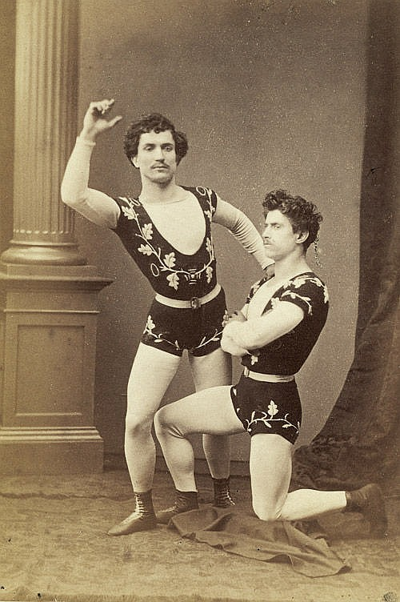
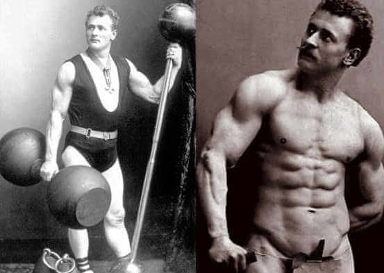
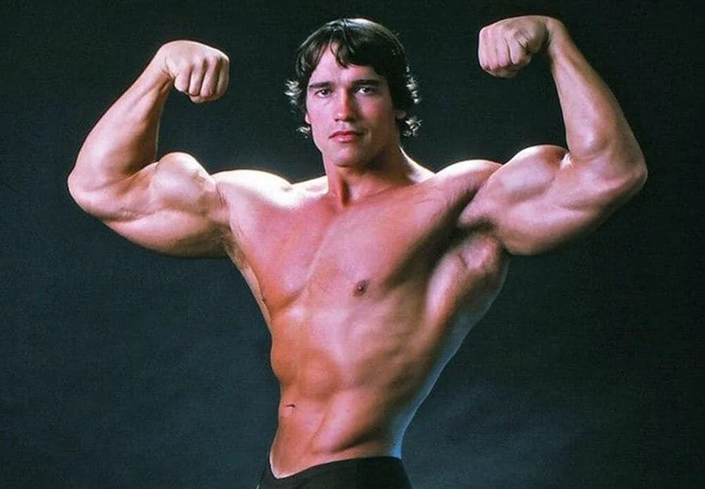

Ancient Greek and Roman civilizations had significant influence on the development of bodybuilding. In ancient Greece, physical fitness was highly valued, and sports and physical exercises were integral parts of daily life. The Greeks viewed an athletic body as a sign of health, beauty, and success, and used exercise as part of their military training. In Roman times, the fascination with bodybuilding further increased. Roman gladiators sought strength and muscularity to survive in the arena. Emperor Augustus encouraged exercise and bodybuilding, even instituting prizes for athletes. The importance of physical fitness and bodybuilding in Ancient Greek and Roman cultures paved the way for the development of bodybuilding as a sport and lifestyle in modern times.
Circus performers in the 19th century played a significant role in the development of bodybuilding. During that time, strong men and women were popular attractions in the circus, where they showcased their strength and skills through various acrobatic stunts and weightlifting. Among them was Eugen Sandow, who is considered the father of modern bodybuilding and began his career as a circus performer. He used his impressive physical appearance to gain fame and later also gave public performances showcasing his muscles and strength demonstrations. It was his innovative training methods and promotion that ultimately led to the popularity of bodybuilding as a sport and lifestyle.
19th-Century Circus Performers
Eugen Sandow is seen as the father of modern bodybuilding and has had a major influence on the development of this sport. He was born in Germany in 1867 and began training with weights at a young age. In 1890, he moved to London and began working there as a circus performer and strongman. Sandow was not only a strongman but also a savvy businessman. He opened a gym in London and taught bodybuilding and health. He also wrote several books on training and nutrition, including “Strength and How to Obtain It” and “Sandow on Physical Training”. In 1901, Sandow organized the very first bodybuilding competition at the Royal Albert Hall in London, which was a great success. He continued to promote the bodies and muscles of men and women as works of art and advocated for a healthy and active lifestyle.
Eugen Sandow
The rise of bodybuilding as a sport began in the 1930s and 1940s when the popularity of muscle displays in vaudeville and burlesque shows started to decline. In 1939, the first official bodybuilding contest was organized by the National Amateur Body Builders Association (NABA) in the United States. However, it wasn’t until the 1950s and 1960s that bodybuilding truly became popular as a competitive sport. In 1946, the Mr. America contest was organized, which quickly became one of the most important bodybuilding competitions in the world. Other well-known competitions during this time were the Mr. Universe and Mr. Olympia contests. These competitions became platforms for bodybuilders to showcase their physical performances and share their knowledge of training, nutrition, and supplements. The rise of competitive bodybuilding led to greater interest in the sport and to new developments in training, nutrition, and supplements. Bodybuilders began to specialize more and focus on specific muscle groups, resulting in new training methods and techniques. The use of supplements and anabolic steroids also increased during this time, which had both positive and negative effects on the sport. Today, bodybuilding is an international and highly competitive sport, with countless competitions and events held around the world. The sport has had a huge impact on the fitness industry and has contributed to the development of new training methods, dietary patterns, and supplements aimed at building muscle mass and improving physical performance.
Arnold Schwarzenegger
"Seven times Mr. Olympia"